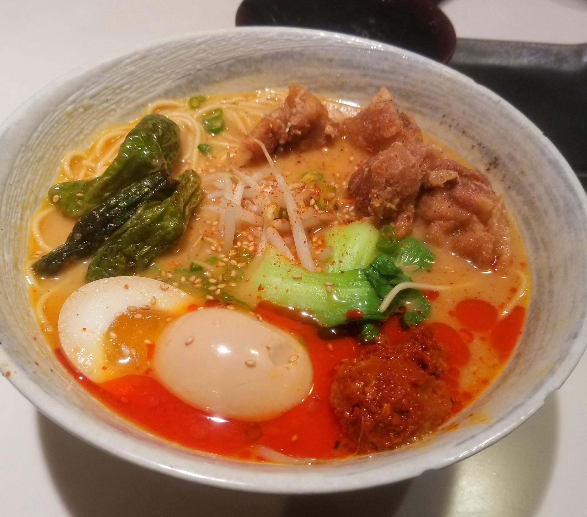
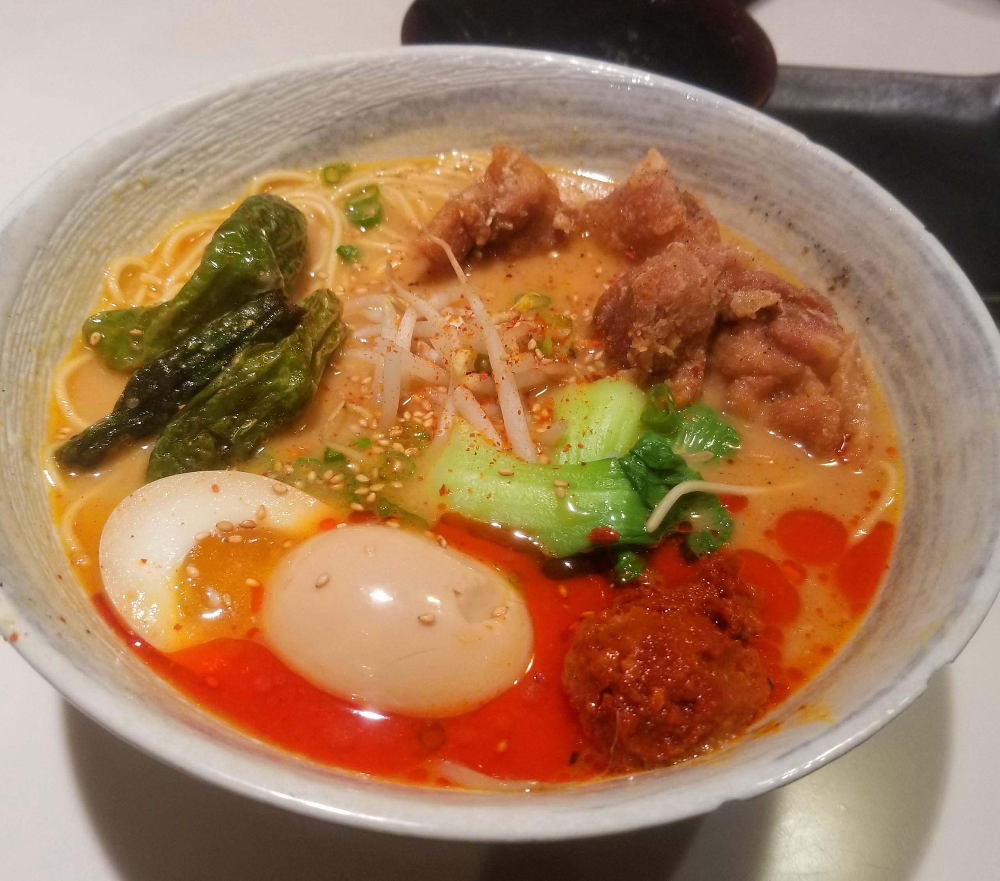

Here we have my all-time favorite places to eat at, including some of the best food I've ever had. You may think of this as Kevin's personal michelin guide.
First off we having Slurping Turtle, located on East Liberty Street close to campus. If you're looking for the perfect meal on a cold day, this is the place for you. With a variety of sushi and ramens to choose from, I've never been disappointed after a meal here. From a slupring turtle regular, I recommend the Duck Fat Fried Chicken Miso Ramen, with an extra side of noodles to soak up all the leftover broth. The sushi is a little pricey, but that gooey sofy boiled ramen egg and crispy chicken are to die for at a price of $18.

 

O.W.L. is located in Royal Oak Michigan just off of Woodward Avenue. Normally open almost 24 hours a day, this small diner has transitioned into a more modest opening time from around 7am - 1am. While the seating is scarce, there is no shortage of hungry customers streaming in and out of this establishment. A regular spot for high schoolers around the Bloomfield Hills / Birmingham area, the Chicken Fried Chicken is a must have. From their website, this dish is composed of cilantro potatoes, poblano cheese sauce, sweet peas, and texas toast served over two large pieces of fried chicken and smothered in gravy for $13.
Located between the suburbs of Novi, Ajishin is frequented by much of the Asian population living around the Northville / Novi areas. With generous portions of sushi at an affordable price, this "No-Frills" Japanese spot with a small dining room often has large lines streaming out the door. From $8 udon, soba noodles, and curry rice to $15 sushi platters, Ajishin offers quality sushi at a bargain, not to mention fresh uni and crab rolls for those who want a taste of luxury.